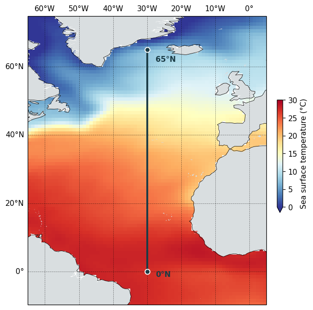
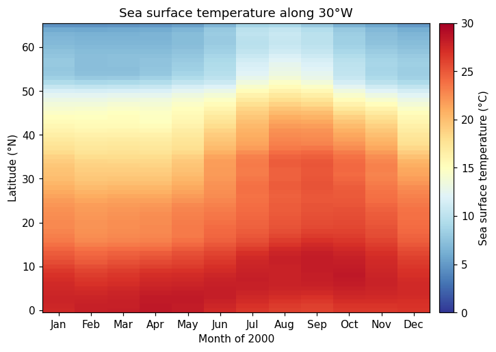

Cut a straight south–north line down the middle of the Atlantic, and watch sea surface temperature change along it through the year.
to_transect() is not yet in a conda release. Install the development version from GitHub to try it:
pip install git+https://github.com/pmlmodelling/nctoolkit.git
This example uses monthly sea surface temperature from COBE-SST2, the same dataset used throughout the visualization guide. It is served over THREDDS, so there is nothing to download:
import nctoolkit as nc ds = nc.open_thredds("https://psl.noaa.gov/thredds/dodsC/Datasets/COBE2/sst.mon.mean.nc") ds.subset(year=2000)
That leaves twelve monthly time steps on a regular 1° lon/lat grid — one global field per month of 2000.
to_transect() takes a start point, an end point and a number of steps. It spaces that many points evenly along the straight line between the two, then regrids the dataset onto them:
ds.to_transect(start=[-30, 0], end=[-30, 65], nsteps=66)
Both points sit on the 30°W meridian, so this is a straight south–north line from the equator up to the Denmark Strait, sampled every degree of latitude. That line stays in open water the whole way — a useful property to check before you commit to a route, since a transect that clips land or sea ice comes back with gaps.
The dataset now holds those 66 points for each of the twelve months, in place of the global fields it started with.
Values along the line are interpolated from the source grid, bilinearly by default. Pass method to change that — "nn" for nearest neighbour, "con" for first-order conservative, and so on, exactly as in regrid().
Asking for steps much finer than the source grid will not add detail that was never there: here the data is on a 1° grid, so nsteps=66 over 65° of latitude samples it at roughly its native resolution.
Before looking at the numbers, it is worth seeing where the line falls — here it is drawn over the annual mean sea surface temperature for 2000:

The line runs dead straight because the map above is drawn on a plate carrée projection, where a line of constant longitude is exactly vertical.
Because both endpoints share a longitude, the transect comes back as a regular grid one cell wide with a genuine latitude dimension — so it pivots straight into a latitude-by-month table:

import matplotlib.pyplot as plt df = ds.to_dataframe().reset_index() grid = df.pivot_table(index="lat", columns="time", values="sst") months = ["Jan", "Feb", "Mar", "Apr", "May", "Jun", "Jul", "Aug", "Sep", "Oct", "Nov", "Dec"] fig, ax = plt.subplots(figsize=(8, 5)) mesh = ax.pcolormesh(range(len(grid.columns)), grid.index, grid.values, cmap="RdYlBu_r", vmin=0, vmax=30, shading="nearest") ax.set_xticks(range(len(grid.columns))) ax.set_xticklabels(months) ax.set_ylabel("Latitude (°N)") ax.set_xlabel("Month of 2000") ax.set_title("Sea surface temperature along 30°W", fontsize=12) bar = fig.colorbar(mesh, ax=ax, pad=0.02) bar.set_label("Sea surface temperature (°C)") fig.savefig("transect_heatmap.png", dpi=110, bbox_inches="tight")
The map and the heatmap share a colour map and a 0–30 °C scale, so the two can be read against one another. The tropical end of the line barely moves across the year, while north of about 40°N the seasonal swing is large — the warm surface water reaching furthest north in late summer, and retreating again by winter.
A transect between two points that differ in both longitude and latitude comes back on an unstructured grid instead — a single run of points rather than a lon/lat grid. It still exports cleanly with to_dataframe(), with lon and lat as columns in transect order, but you would plot it against distance or point number rather than pivoting on latitude.